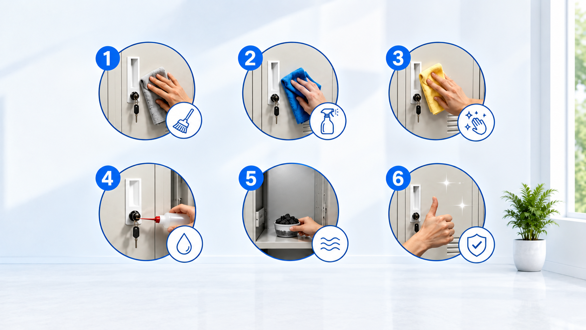

Mengenal Pixel Pitch pada Videotron Outdoor
Pahami perbedaan pixel pitch dan cara menyesuaikannya dengan jarak pandang serta kebutuhan tampilan.

Videotron outdoor berkualitas tinggi untuk kebutuhan advertising, promosi, event, informasi publik, dan berbagai kebutuhan visual profesional. Hadir dengan tampilan cerah, tajam, dan mudah terlihat di berbagai kondisi outdoor.
Kebutuhan promosi dan informasi di area outdoor membutuhkan media visual yang terang, jelas, dan mampu menarik perhatian. Berikut beberapa tantangan yang dapat diatasi dengan videotron outdoor.
Pahami perbedaan pixel pitch dan cara menyesuaikannya dengan jarak pandang serta kebutuhan tampilan.

Ruang arsip yang sempit tidak mampu menampung volume konten yang terus meningkat seiring perkembangan bisnis.

Konten penting rentan terhadap akses tidak sah, kerusakan air, serangan hama, dan risiko kebakaran tanpa penyimpanan yang tepat.
Videotron outdoor dirancang untuk menghadirkan tampilan visual yang terang, tajam, dan dinamis sehingga cocok untuk berbagai kebutuhan promosi, informasi, dan event.
Cocok untuk advertising, pusat perbelanjaan, gedung, area publik, event, dan berbagai lokasi outdoor.
Dilengkapi kunci cam lock atau combination lock, material besi tebal, dan finishing anti karat untuk perlindungan konten jangka panjang.
Desain vertikal yang optimal memaksimalkan ruang lantai, cocok untuk ruang kantor yang terbatas tanpa mengorbankan kapasitas penyimpanan.

Pilih solusi videotron outdoor sesuai kebutuhan bisnis, advertising, event, dan area pemasangan Anda.

Videotron outdoor LG untuk kebutuhan advertising, commercial display, event, dan berbagai kebutuhan visual outdoor.
Lihat Detail →
Solusi outdoor LED display Samsung untuk kebutuhan advertising, informasi, event, dan berbagai kebutuhan visual profesional.
Lihat Detail →
Outdoor LED display Hikvision untuk kebutuhan advertising, commercial area, event, dan berbagai kebutuhan visual outdoor.
Lihat Detail →Fitur dan layanan yang mendukung kebutuhan display digital outdoor secara profesional.

Dapatkan bantuan memilih spesifikasi, ukuran, dan konfigurasi videotron sesuai kebutuhan proyek Anda.

Dilengkapi kunci cam lock, combination lock, atau kunci model lainnya. Setiap pintu terkunci rapi untuk melindungi konten rahasia Anda.

Desain knock-down dan modular memungkinkan pemasangan cepat tanpa alat khusus. Tim kami juga menyediakan layanan instalasi di lokasi Anda.

Pengiriman dan pengiriman ke seluruh wilayah Jakarta dan sekitarnya. Tim penjualan dan layanan purna jual siap melayani Anda kapan saja.

Dari single door hingga multi-door, tersedia dalam berbagai dimensi dan konfigurasi. Sesuaikan dengan kebutuhan ruangan dan volume konten Anda.
Kami menawarkan harga terbaik tanpa mengorbankan kualitas. Setiap produk dilengkapi garansi resmi sehingga Anda beli dengan tenang.
Baca informasi dan panduan seputar pemilihan, pemasangan, penggunaan, dan perawatan videotron outdoor.

Ketahui kriteria yang perlu diperhatikan saat memilih videotron outdoor besi untuk ruang kantor Anda, mulai dari ukuran, material, hingga sistem keamanan.
Baca Selengkapnya
Panduan lengkap merawat videotron outdoor besi agar tetap tampak bagus dan fungsional dalam jangka panjang, termasuk pencegahan karat dan pembersihan rutin.
Baca Selengkapnya
Analisis mendalam membandingkan kelebihan dan kekurangan produk videotron outdoor besi Zeco dan Vivorti untuk membantu Anda membuat keputusan terbaik.
Baca SelengkapnyaJawaban atas pertanyaan yang sering diajukan tentang produk, spesifikasi, pemasangan, harga, dan layanan videotron outdoor.
Tentu. Konsultasi membantu menentukan ukuran, pixel pitch, tingkat kecerahan, dan spesifikasi yang sesuai dengan lokasi serta kebutuhan penggunaan.
Ya, kami melayani pengiriman ke seluruh wilayah Jakarta termasuk Jakarta Selatan, Utara, Timur, Barat, dan Pusat. Pengiriman juga tersedia ke daerah sekitar seperti Bogor, Depok, Tangerang, dan Bekasi.
Tersedia opsi custom ukuran dan warna untuk pembelian dalam jumlah tertentu. Silakan konsultasikan kebutuhan Anda dengan tim penjualan kami untuk detail syarat dan ketentuan yang berlaku.
Ya, setiap produk videotron outdoor besi Zeco dan Vivorti yang kami jual dilengkapi garansi resmi. Durasi dan cakupan garansi sesuai dengan kebijakan masing-masing brand.
Cukup hubungi tim kami melalui WhatsApp, telepon, atau formulir kontak. Tim kami akan memberikan konsultasi, penawaran harga, dan informasi ketersediaan stok. Setelah deal, proses produksi dan pengiriman akan segera diproses.
Ya, Anda bisa datang ke showroom kami untuk melihat dan membandingkan produk secara langsung. Silakan buat janji terlebih dahulu agar tim kami dapat memberikan pelayanan yang lebih optimal.
Konsultasikan kebutuhan videotron outdoor Anda dan dapatkan rekomendasi spesifikasi serta penawaran yang sesuai dengan proyek Anda.